Confidence Interval Problems
1A study is conducted in a neighborhood to better understand the types of recreational activities. 100 individuals are selected at random and surveyed.
It is known that 2,500 children, 7,000 adults and 500 elderly live in the neighborhood. Therefore, the researchers decide to choose the previous sample using stratified sampling as it is known that the recreations of the inhabitants change with age. Knowing this, determine the sample size for each stratum.
2Given the population of elements: {22, 24, 26}.
1.Write down all possible samples of size two, chosen by simple random sampling.
2.Calculate the variance of the population.
3.Calculate the variance of the sample averages.
3The height of students studying at a language school follows a normal distribution with a mean of 1.62 m and a standard deviation of 0.12. What is the probability that the mean of a random sample of 100 students will be taller than 1.60 m?
4A sample of the various prices for a particular product has been conducted in 16 stores which were selected at random in a neighborhood of a city. The following prices were noted:
95, 108, 97, 112, 99, 106, 105, 100, 99, 98, 104, 110, 107, 111, 103, 110.
Assuming that the prices of this product follow a normal law of variance of 25 and an unknown mean:
1.What is the distribution of the sample mean?
2.Determine the confidence interval at 95% for the population mean.
5The average heights of a random sample of 400 people from a city is 1.75 m. It is known that the heights of the population are random variables that follow a normal distribution with a variance of 0.16.
1.Determine the interval of 95% confidence for the average heights of the population.
2.With a confidence level of 90%, what would the minimum sample size need to be in order for the true mean of the heights to be less than 2 cm from the sample mean?
6The monthly sales of an appliance shop are distributed according to a normal law, with a standard deviation of $900. A statistical study of sales in the last nine months has found a confidence interval for the mean of monthly sales with extremes of $4,663 and $5,839.
1. What were the average sales over the nine month period?
2.What is the confidence level for this interval?
7The proportion of color blind individuals in a population needs to be estimated by the percentage observed in a random sample of individuals of size n.
1.If the percentage of color blind individuals in the sample is 30%, estimate the value of n so that, with a confidence level of 0.95, the error in the estimate is less than 3.1%.
2.If the sample size is 64 individuals, and the percentage of color blind individuals in the sample is 35%, determine using a significance level of 1%, the corresponding confidence interval for the proportion of the color blind population.
8In a population, a random variable follows a normal distribution with an unknown mean and a standard deviation of 2.
1.In a sample of 400 selected at random, a sample mean of 50 was obtained. Determine the confidence interval with a confidence level of 97% for the average population.
2.With the same confidence level, what minimum sample size should it have so that the interval width has a maximum length of 1?
9The quantity of hemoglobin in the blood spream of a man follows a normal distribution with a standard deviation of 2 g/dl.
Calculate the confidence level for a sample of 12 men which indicates that the population mean blood hemoglobin is between 13 and 15g/dl.
10 In a department store chain, 150 people work in human resources, 450 in sales, 200 in accounting and 100 in customer service. In order to conduct a survey, a sample of 180 workers is selected.
How many employees should be selected from each department according to the criterion of proportionality?
Confidence Interval Solutions
1
A study is conducted in a neighborhood to better understand the types of recreational activities. 100 individuals are selected at random and surveyed.
It is known that 2,500 children, 7,000 adults and 500 elderly live in the neighborhood. Therefore, the researchers decide to choose the previous sample using stratified sampling as it is known that the recreations of the inhabitants change with age. Knowing this, determine the sample size for each stratum.
Total population: 2,500 + 7,000 + 500 = 10,000.
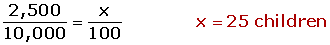
2
Given the population of elements: {22, 24, 26}.
1.Write down all possible samples of size two, chosen by simple random sampling.
M1 = {22, 24}, M1 = {22, 26}, M1 = {24, 26}
2.Calculate the variance of the population.
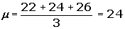
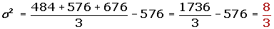
3.Calculate the variance of the sample averages.
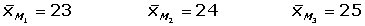


3
The height of students studying at a language school follows a normal distribution with a mean of 1.62 m and a standard deviation of 0.12. What is the probability that the mean of a random sample of 100 students will be taller than 1.60 m?
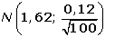
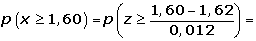
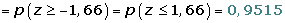
4
A sample of the various prices for a particular product has been conducted in 16 stores which were selected at random in a neighborhood of a city. The following prices were noted:
95, 108, 97, 112, 99, 106, 105, 100, 99, 98, 104, 110, 107, 111, 103, 110.
Assuming that the prices of this product follow a normal law of variance of 25 and an unknown mean:
1.What is the distribution of the sample mean?
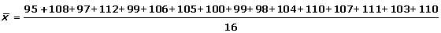
2.Determine the confidence interval at 95% for the population mean.

95% → zα/2 = 1.96
(104 − 1.96 · 1. 25, 104 + 1.9 · 1.25) = (101.55; 106.45)
5
The average heights of a random sample of 400 people from a city is 1.75 m. It is known that the heights of the population are random variables that follow a normal distribution with a variance of 0.16 m.
1.Determine the interval of 95% confidence for the average heights of the population.
n = 400 x = 1.75 σ = 0.4
1 − α = 0.95 zα/2 = 1.96
(1.75 ± 1.96 · 0.4/20 ) → (1.7108,1.7892)
2.With a confidence level of 90%, what would the minimum sample size need to be in order for the true mean of the heights to be less than 2 cm from the sample mean?
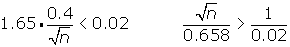
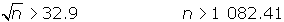
The sample must be at least 1,083 people.
6
The monthly sales of an appliance shop are distributed according to a normal law, with a standard deviation of $900. A statistical study of sales in the last nine months has found a confidence interval for the mean of monthly sales with extremes of $4,663 and $5,839.
1. What were the average sales over the nine month period?
n = 9 x = (4,663 + 5,839)/2; x =5,251
2. What is the confidence level for this interval?
E = (5,839 − 4,663)/2 = 588
588 = z α/2 · 900/3 zα/2 = 1.96
1 − α = 0.95 → 95%
7
The proportion of color blind individuals in a population needs to be estimated by the percentage observed in a random sample of individuals of size n.
1. If the percentage of color blind individuals in the sample is 30%, estimate the value of n so that, with a confidence level of 0.95, the error in the estimate is less than 3.1%.
1 − α = 0.95 zα/2 = 1.96
At least 840 individuals.
2.If the sample size is 64 individuals, and the percentage of color blind individuals in the sample is 35%, determine using a significance level of 1%, the corresponding confidence interval for the proportion of the color blind population.
α = 0.01 1 − α = 0.99 zα/2 = 2.575
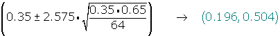
8
In a population, a random variable follows a normal distribution with an unknown mean and a standard deviation of 2.
1.In a sample of 400 selected at random, a sample mean of 50 was obtained. Determine the confidence interval with a confidence level of 97% for the average population.
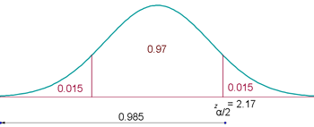
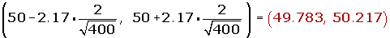
2.With the same confidence level, what minimum sample size should it have so that the interval width has a maximum length of 1?
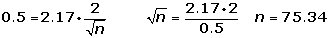
n ≥ 76
9
The quantity of hemoglobin in the blood spream of a man follows a normal distribution with a standard deviation of 2 g/dl.
Calculate the confidence level for a sample of 12 men which indicates that the population mean blood hemoglobin is between 13 and 15g/dl.
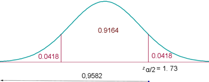
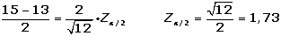
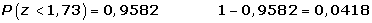
10
In a department store chain, 150 people work in human resources, 450 in sales, 200 in accounting and 100 in customer service. In order to conduct a survey, a sample of 180 workers is selected.
How many employees should be selected from each department according to the criterion of proportionality?